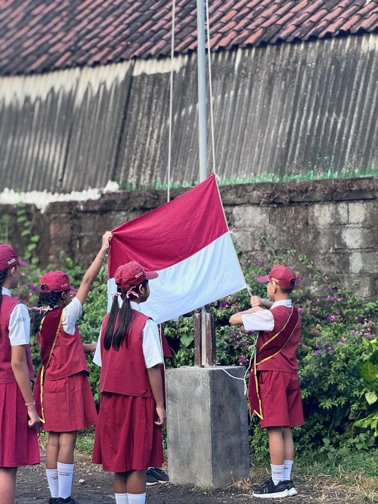

Aa
Gerakan Literasi Sekolah Membaca Menulis
GELIS MANIS
Menumbuhkan budaya membaca dan menulis melalui pembiasaan literasi yang dekat dengan keseharian peserta didik.
Selengkapnya →
“Kebiasaan kecil hari ini untuk lingkungan yang lebih baik.”
Tentang program
GERUSTIK atau Gerakan Pengurangan Sampah Plastik merupakan program kepedulian lingkungan SD Negeri 3 Kesiman yang berfokus pada upaya mengurangi sampah plastik di lingkungan sekolah.
Program ini mendorong seluruh warga sekolah, khususnya peserta didik, untuk mulai memahami bahwa menjaga lingkungan dapat dilakukan melalui kebiasaan sederhana dalam kehidupan sehari-hari.
Melalui GERUSTIK, kepedulian terhadap lingkungan tidak hanya dipelajari sebagai pengetahuan, tetapi juga dibangun menjadi kebiasaan bersama untuk menciptakan lingkungan sekolah yang bersih, indah, sehat, dan nyaman.
“Terwujudnya warga sekolah yang peduli lingkungan dan terbiasa mengurangi sampah plastik dalam kehidupan sehari-hari.”
Misi program
Pelaksanaan program
GERUSTIK dilaksanakan melalui pembiasaan dan berbagai kegiatan kepedulian lingkungan yang melibatkan warga sekolah. Program diarahkan agar kepedulian terhadap lingkungan berkembang menjadi kebiasaan nyata yang dilakukan secara konsisten.
Nama kegiatan dan jadwal akan ditambahkan setelah data program dikonfirmasi sekolah.
Program lingkungan sekolah
Empat program lingkungan sekolah, yaitu AKAR, Polisi Hijau, SEHATI, dan ECO DHARMA, telah mulai dilaksanakan sejak Agustus 2026. Program-program tersebut dilaksanakan secara rutin sebagai bagian dari pembiasaan kepedulian terhadap lingkungan dan pola hidup sehat di sekolah.
| Program | Pelaksanaan | Kegiatan |
|---|---|---|
| AKAR Aksi Kecil Anak Rawat Alam | 1 kali dalam seminggu | Merawat dan menyiram tanaman serta mengecek kondisi tanaman di lingkungan sekolah. |
| Polisi Hijau | Setiap hari dengan sistem piket bergiliran | Berkeliling dan melakukan observasi kebersihan lingkungan menggunakan lembar observasi. |
| SEHATI Sehat Hari Ini, Ceria Setiap Hari | 1 kali dalam sebulan | Mengajak siswa memilih dan mengonsumsi makanan sehat. |
| ECO DHARMA | Setelah kegiatan persembahyangan pada hari-hari tertentu | Memilah dan mengelola sisa sampah setelah kegiatan persembahyangan. |
Geser tabel ke samping untuk melihat seluruh informasi.
Galeri kegiatan
“Aksi sederhana warga sekolah untuk menjaga lingkungan SD Negeri 3 Kesiman.”
Program unggulan lainnya
Jelajahi berbagai program SD Negeri 3 Kesiman dalam menghadirkan pendidikan yang bermakna dan berkarakter.
Menumbuhkan budaya membaca dan menulis melalui pembiasaan literasi yang dekat dengan keseharian peserta didik.
Selengkapnya →Membangun kebiasaan positif melalui kolaborasi sekolah dan keluarga.
Selengkapnya →Menghadirkan pengalaman belajar numerasi melalui permainan yang menyenangkan.
Selengkapnya →